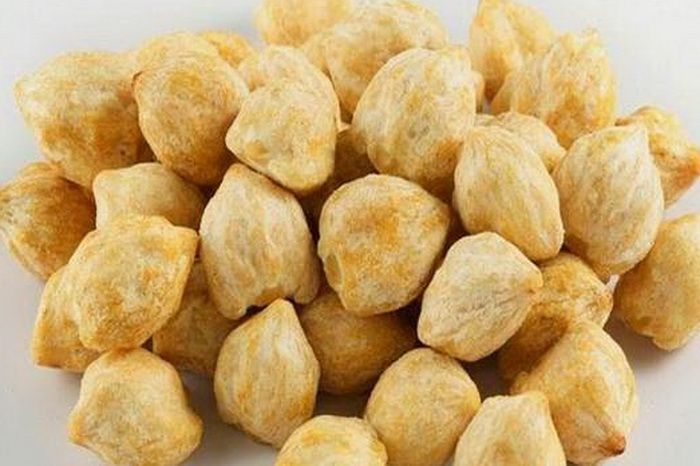

Katalog Rempah-Rempah Indonesia

Cengkeh
Berasal dari Maluku, terkenal karena aroma khasnya yang kuat. Digunakan dalam rokok kretek dan masakan manis.
Detail
Pala
Tanaman asli Banda yang bijinya digunakan sebagai bumbu utama untuk semur, sup, dan kue tradisional.
Detail
Jahe
Rimpang yang sering digunakan sebagai minuman penghangat dan bumbu dasar untuk berbagai masakan pedas.
Detail
Lada/Merica
Salah satu rempah paling banyak diekspor dari Lampung. Memberikan rasa pedas yang tajam.
Detail
Kayu Manis
Kulit kayu manis yang memberikan aroma manis dan hangat, sering digunakan dalam kue dan minuman.
Detail
Kapulaga
Sering ditemukan dalam campuran bumbu gulai dan masakan timur tengah yang kaya rasa.
Detail

Kemiri
Biji yang digunakan untuk mengentalkan bumbu masakan dan memberikan rasa gurih alami.
Detail